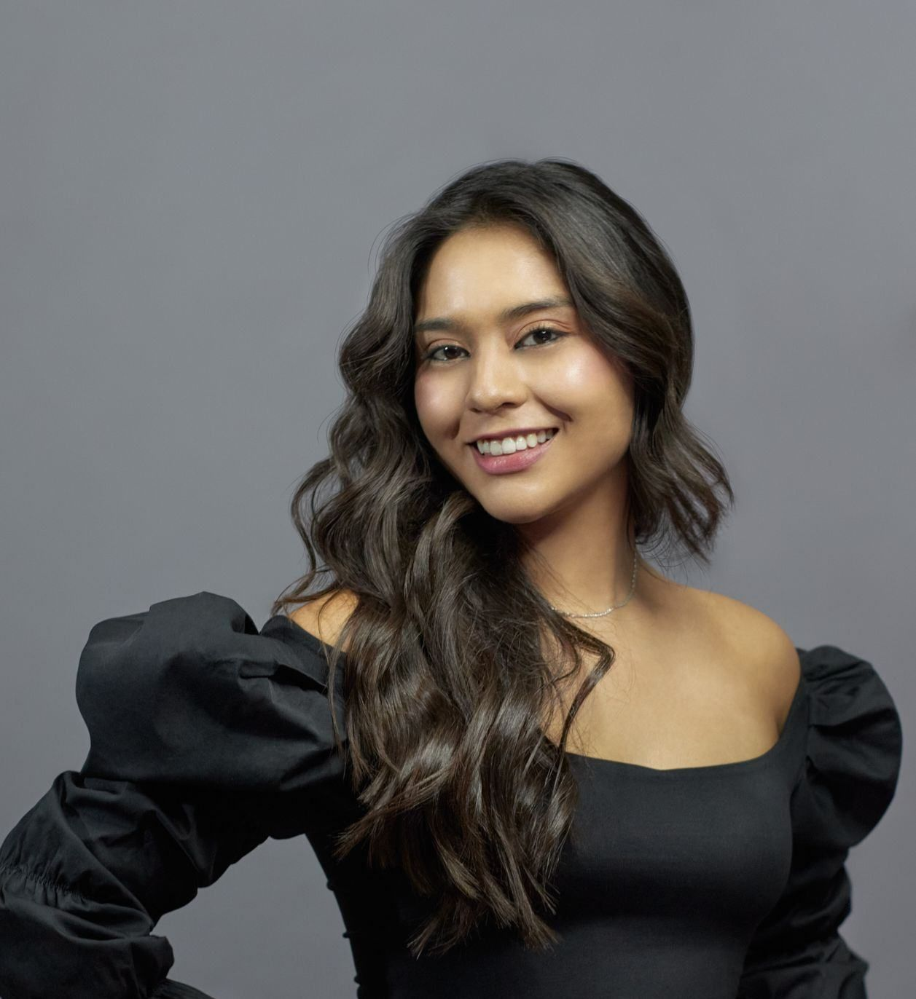
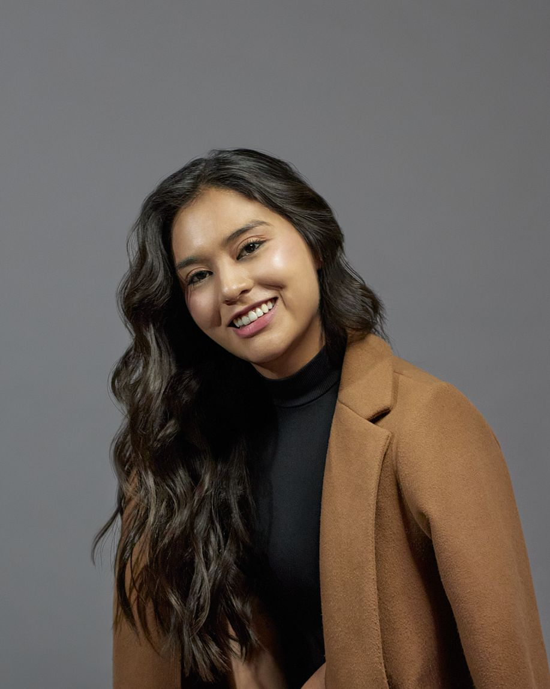
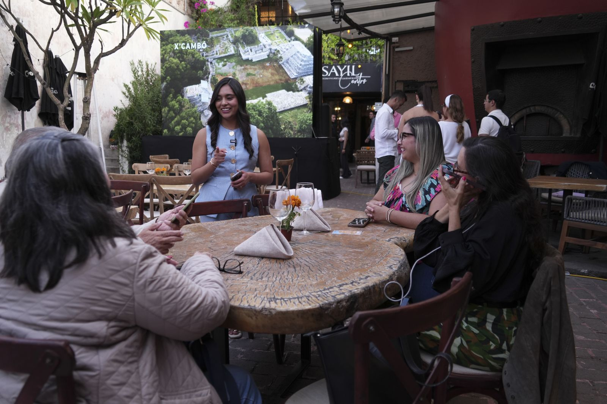
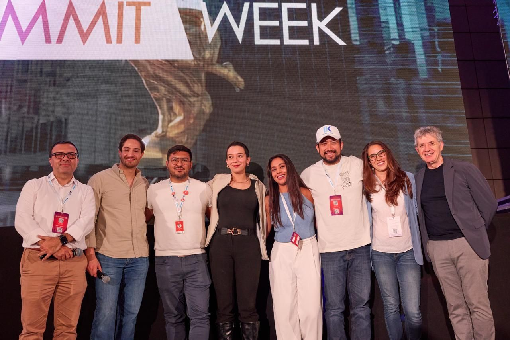
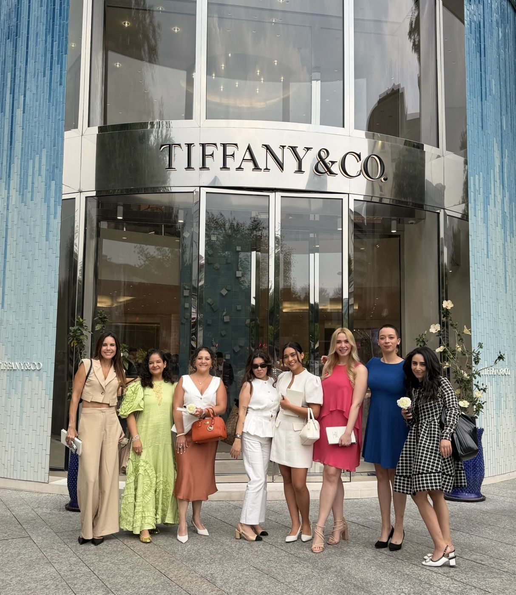
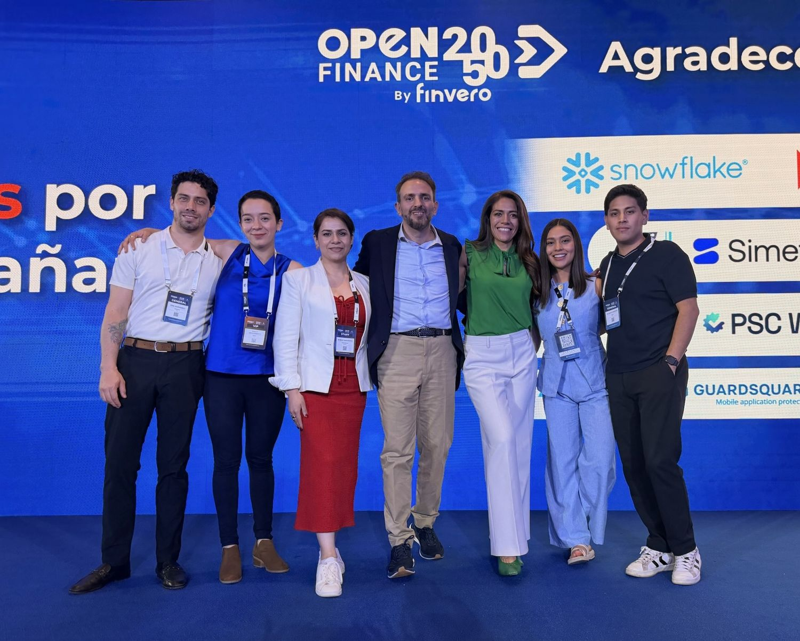
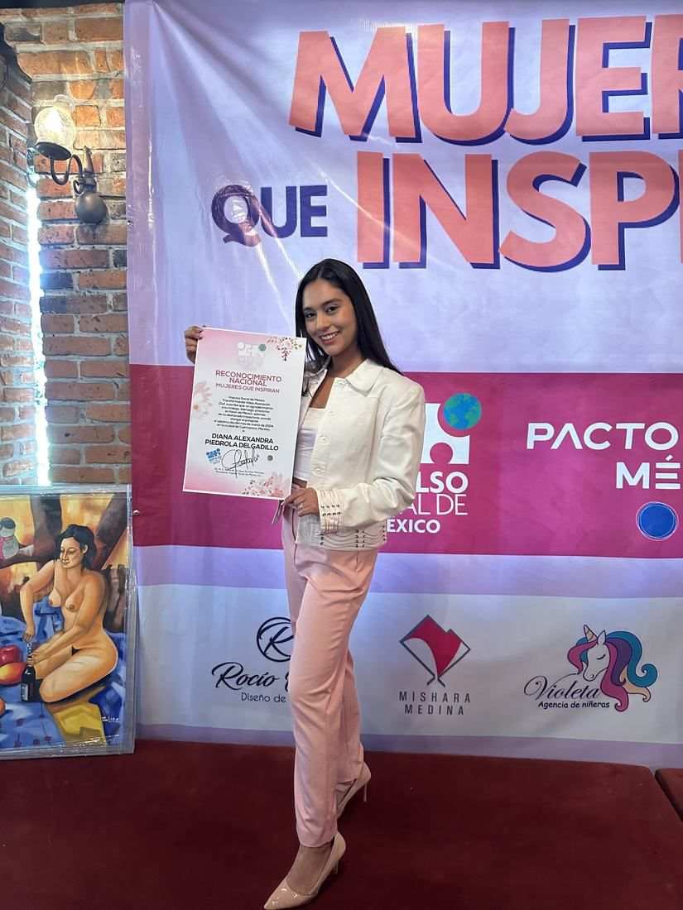
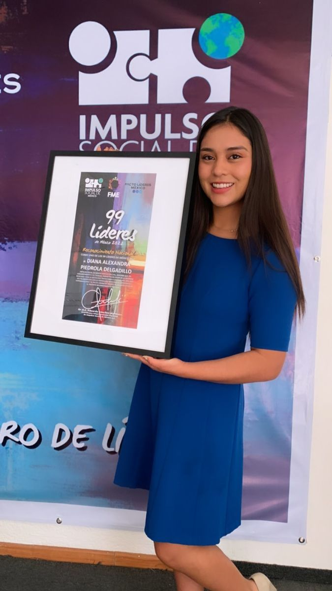
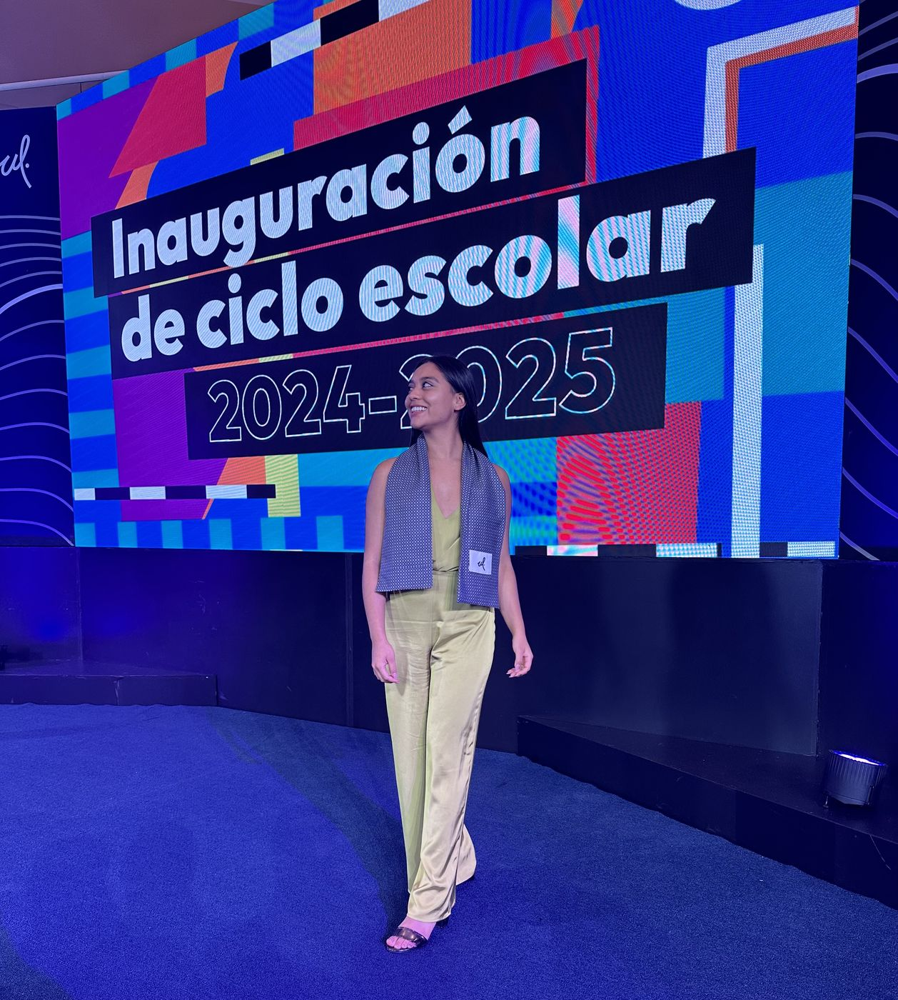
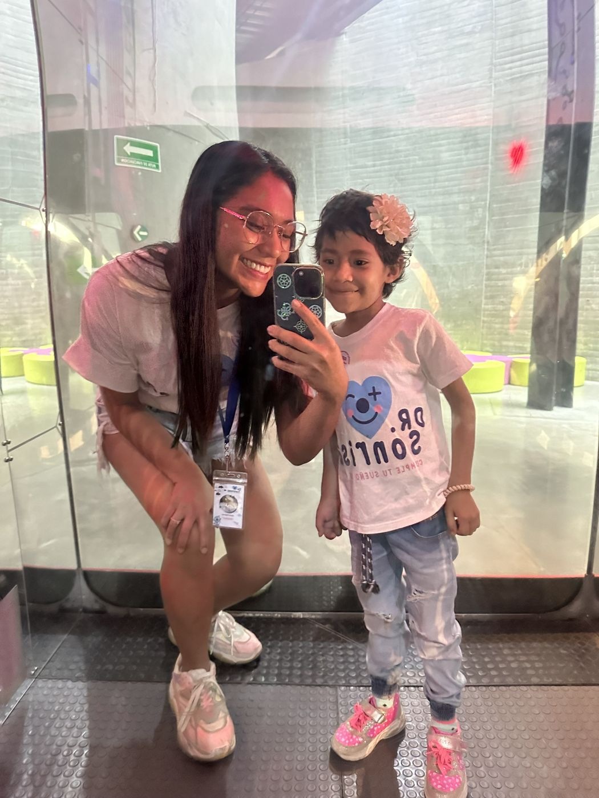

Construyo negocios, patrimonio y comunidad. Proyectos que acercan a más mujeres a la autonomía económica.
CONOCE MI HISTORIA
Tengo 24 años, soy mexicana y originaria de Cuernavaca, Morelos. Mi trayectoria comenzó cuando viví en Estados Unidos como au pair: durante esa etapa ahorré para reunir el enganche de mi primera inversión inmobiliaria, aproximadamente a los 19 años.
Esa experiencia cambió mi manera de entender el dinero. Para mí, construir patrimonio significa crear opciones, autonomía y libertad a largo plazo. Hoy soy emprendedora, asesora e inversionista inmobiliaria, creadora de proyectos y estudiante de negocios en la Universidad de la Libertad.
Especializada en inversiones inmobiliarias, preventas, terrenos, departamentos, asesoría a inversionistas y comercialización de desarrollos.
Los +$40M MXN corresponden a transacciones comerciales en las que he participado, no a patrimonio personal.

He acompañado a inversionistas en algunos de los mercados de mayor movimiento del país, desde la preventa hasta la comercialización del desarrollo, con un enfoque en decisiones informadas y horizontes de largo plazo.
Tecnología, comunidad e infraestructura financiera como caminos hacia más libertad económica.

Startup AI native para profesionales inmobiliarios. Inteligencias autónomas —los Numis— que operan la creación de contenido, la gestión y el seguimiento de prospectos, la calificación de oportunidades y el agendamiento. El asesor deja de administrar su operación y se concentra en cerrar.
GANADOR · THE NEXT BIG THING, PROPTECH LATAM SUMMIT 2026↗ Actualmente en desarrollo
Comunidad de experiencias intencionales para mujeres que elevan los estándares en todas las áreas de su vida. Creamos espacios cuidados donde puedan desarrollar conexiones auténticas, conversar sobre crecimiento, ampliar su perspectiva y construir relaciones significativas.

Startup mexicana que busca construir infraestructura financiera y de confianza para la industria de eventos, conectando a clientes, proveedores y organizadores mediante herramientas de gestión, trazabilidad y protección de pagos.
GANADORES · ETAPA CLASIFICATORIA MÉXICO, FINTECH WORLD CUP 2026↗ Cofundadora y COO · Etapa temprana de desarrollo“Construir patrimonio no se trata de acumular. Se trata de crear opciones, autonomía y libertad a largo plazo.”


Actualmente estudio en la Universidad de la Libertad con la beca del 100% Mérito a la Prosperidad. Para mí, la universidad es la forma de combinar aprendizaje académico con la construcción de proyectos reales.

Más de cinco años de voluntariado con Dr. Sonrisas, asistiendo sueños de niñas y niños con enfermedades graves.
